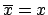

Using the LinearAlgebra Package
L. F. Rossi
Maple has two packages containing features that allow the user to manipulate vectors and matrices. The first package linalg was developed for Maple V, but it has numerous shortcomings. It is still available in later versions of Maple, but Maple 6 and later have a new library called LinearAlgebra. You can load LinearAlgebra into your worksheet by executing the command:
with(LinearAlgebra);Maple will list all the new commands in the library. If you do not like all this output, you can replace the semincolor (;) at the end with a colon(:).
v := <1,2,3>; w := <t,t^2,t^3>;Notice that this creates a column vector which is a correct interpretation of the vector notation in your book.
v+w; u := v+w;
3*u; c*u
v . w; DotProduct(v,w);Notice that the output may involve complex conjugates. That's ok. If x is real, then

.
CrossProduct(v,w);
map(sin,v); map(diff,w,t);